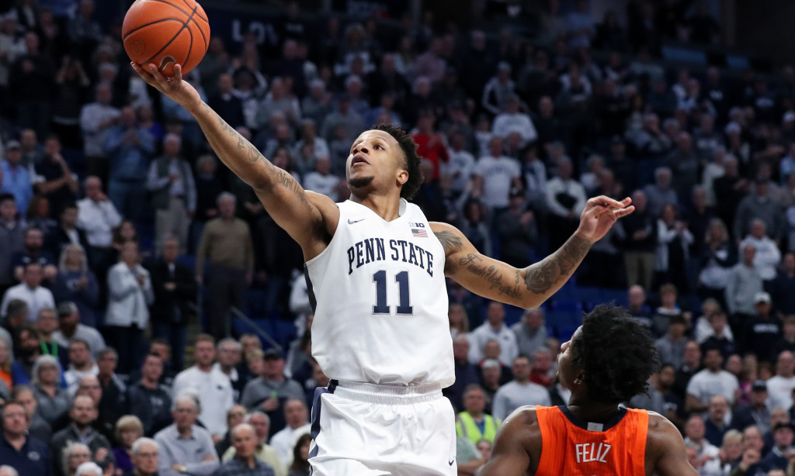
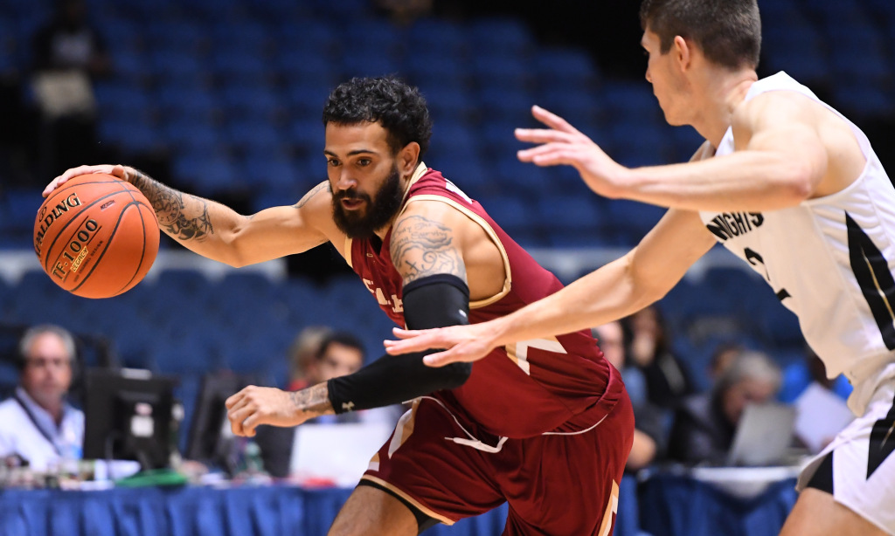
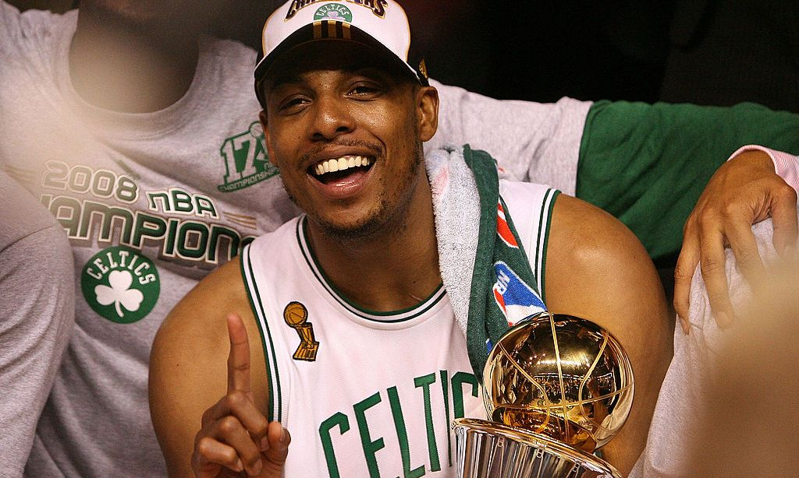
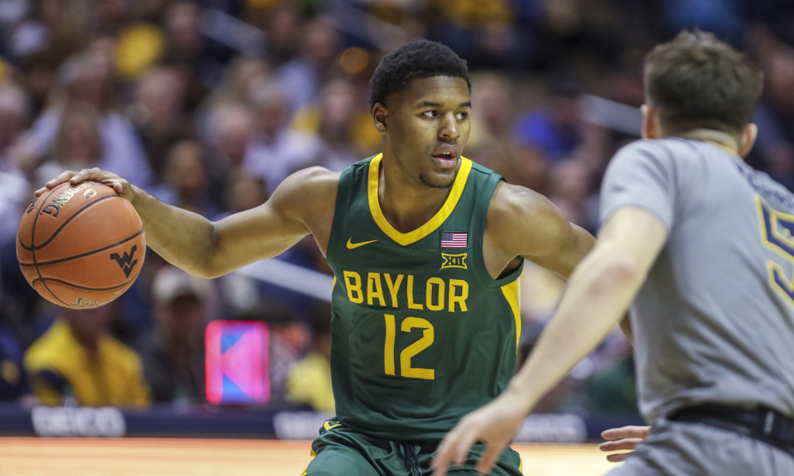
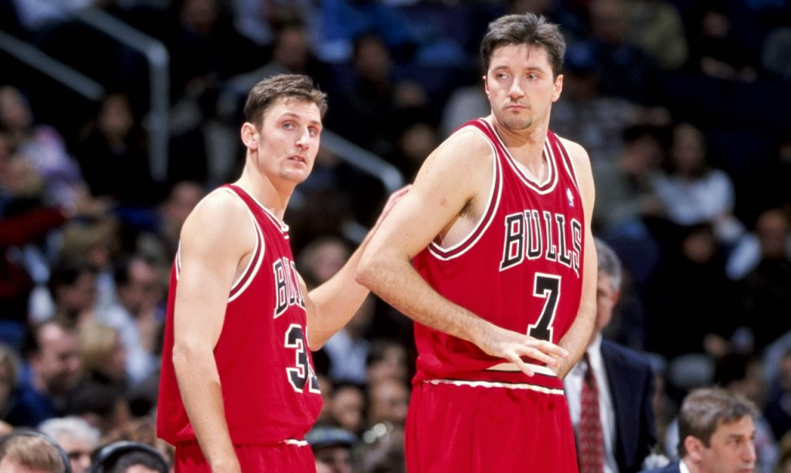

Basketball Blog

-
enn State Nittany Lions forward Lamar Stevens was a four-year starter in the NCAA who is a versatile prospect on both offense and defense.Stevens was one of the more accomplished frontcourt players in the Big Ten Conference. The 22-year-old college star spoke to HoopsHype about how he has been preparing for the upcoming draft while reflecting on his experience in the NCAA.
Note: This transcription has been minorly edited for clarity.
What were some of your favorite memories and experiences playing in college?
Lamar Stevens: First of all, writing a book was the highlight of my college career. I loved being able to give back to the fans that were so good to me. Winning the NIT was also a highlight. Honestly, all of this season was an amazing experience. We sold out the Bryce Jordan Center which hadn’t been done in 10 years. We have reached rankings that have never been reached. We were breaking all types of records this year. Writing a book will definitely help you stand out among other players. Could you tell me more about it?
LS: Our director of marketing PJ Mullen and I came up with the idea to write a children’s book. We wanted the book to teach kids about the different places in Pennsylvania. It was really cool. I’ve never done anything like that. To have my name on a book, I never imagined that happening. It definitely was something that was special for me. It was illustrated by six of my friends who have Down syndrome. One of the illustrators was my coach’s daughter. They drew and colored in all of the pictures. We were able to release the book when we played Minnesota and it was a really cool day. The kids that were involved with the book loved it. I loved seeing the joy come out of them from their excitement of having a book released to so many people and for them to be in the spotlight. Wow. That is a beautiful story. How did you meet the kids?
LS: Being at Penn State, we always got involved with community service. Ever since my freshman year, we worked with the Special Olympics. They have a thing called the “buddy walk” and I developed a good relationship with our associate head coach Keith Urgo, whose daughter helped illustrate the book. Throughout my years at Penn State, I developed a relationship with those kids and the book really helped express those friendships.I know you got your degree in sociology. But is writing something you have been interested in for a while?
Read more about this

-
NBA prospect Grant Riller: 'Fred VanVleet and Lou Williams are my two favorite comparisons so far'
Charleston Cougars senior Grant Riller had been one of the most accomplished scorers in college basketball for several years in a row. The 6-foot-3 guard is one of the most exciting offensive prospects in the 2020 NBA Draft. The 23-year-old college star spoke to HoopsHype about how he has been preparing for the upcoming draft while reflecting on his experience in the NCAA. Note: This transcription has been minorly edited for clarity. What were the biggest takeaways you had from your experience at the College of Charleston?
Grant Riller: I got the whole college experience. I was there for five years. I had a long time to get used to it. I enjoyed all of the time with my teammates and my coaches. That was the best part for me. I knew that basketball would come eventually but those relationships are going to last forever. Your junior year, you were teammates with Utah Jazz rookie big Jarrell Brantley. What advice has he given you about the process?
GR: He told me to be patient and run my own race. We know we’re in for the long haul. Regardless of how things start off, we are there for the end game. He makes sure that I know that. Our relationship is deeper than basketball. Every time we talk, it’s not always about basketball.
What have your feelings been on the pre-draft process being so strange for NBA prospects?
Read more about this

-
Paul Pierce has been involved in more buzzer beaters than any other player ever
If you combine baskets and assists, no one can top Celtics legend Paul Pierce in buzzer-beating plays in NBA history.
Read more about this

-
NBA prospect Jared Butler: 'I truly believed we were going to win the NCAA championship'
Baylor Bears sophomore guard Jared Butler is largely considered one of the top 3-and-D guards who will be available in the 2020 NBA draft. Butler was consistently one of the best players on one of the best teams in D-I college basketball. The 19-year-old guard spoke to HoopsHype about how he has been preparing for the upcoming draft while reflecting on his experience with the Baylor Men’s Basketball program. Please note that this transcription has been minorly edited for clarity. Obviously, we’re in a strange situation in regards to the draft. What have you been doing to keep yourself focused and prepared for the draft and potentially becoming a professional basketball player? Jared Butler: As far as getting ready for the draft, I’ve continued working out on and off the court with strength and conditioning. That’s been really good. I’ve been preparing for the interview process before the draft. I’ve been interviewed by NBA teams and they’ve been learning a lot about me. I’ve been enjoying the process, not going to lie. How would you describe your game to someone who has heard good things but hasn’t had a chance to watch you play yet?
JB: I’m a poised, smooth, competitive player. When the ball is in my hand with three minutes left and we’re up, I’m going to act like it’s the beginning of the game. I’m willing to take the big shots. I’m willing to make the right pass and make the game look easy. That’s what you’d expect if you have never seen me play before. When you’re talking with NBA teams and executives, what is one thing you want them to know?
Read more about this

-
After The Last Dance: An oral history of the 1998-99 Chicago Bulls'
After winning six championships in eight seasons, the Chicago Bulls’ dynastic run came to an end in the summer of 1998. Phil Jackson, Michael Jordan, Scottie Pippen, Dennis Rodman, Steve Kerr, Jud Buechler and Luc Longley were replaced. Only six players from the previous season returned in 1998-99. After totaling 62 wins (the most in the NBA) and capturing their third-straight title, the Bulls won just 13 games (the third-fewest in the NBA) in 1998-99, joining the 1969-70 Boston Celtics as the only defending champions to miss the playoffs. HoopsHype talked to several players from that Bulls squad and three writers who covered the team to discuss that difficult season, what it was like trying to fill such big shoes, the end of the dynasty and more. This story begins right where “The Last Dance” ends. Dickey Simpkins, Bulls forward from 1994-2000: “That offseason, we saw that the transformation was starting. For us returning veterans, we kind of had to embrace it. We had a new coach coming in from college basketball and we knew we’d have a lot of young guys. We knew the rebuild was starting. It was hard to fully process the sudden change from a championship-caliber team to a rebuilding team.”
Read more about this